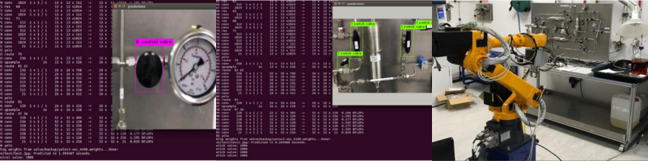

Robotics
H2S Robotic Arm & Camera Detection
Robotic manipulator and vision work for camera-based detection in hazardous (H2S) contexts, supporting safer inspection and monitoring scenarios in PETRONAS operations.
- Applied deep learning-based detection and localization for industrial components relevant to valve and asset monitoring use cases.
- Collaborated on integration of vision pipelines with robotic arm motion and field constraints.
Related publication: YOLO-based valve type recognition and localization (IEEE ICIEA 2019) · PDF